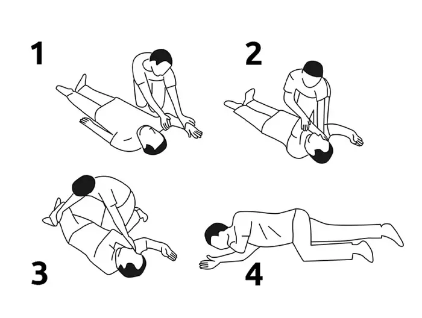

Сознание, дыхание и СЛР
Как только сцена безопасна, определите, в сознании ли пострадавший и дышит ли он — от этого зависит, начинать ли реанимацию.
- Проверьте сознание — обратитесь к пострадавшему, слегка потормошите за плечи.
- Если сознание есть — переходите сразу к вторичному осмотру травм.
- Если сознания нет — в первую очередь проверяйте дыхание, а не пульс: в стрессе легко принять свой собственный пульс за пульс пострадавшего.
- Освободите грудную клетку от одежды, аккуратно запрокиньте голову (ладонь на лоб, два пальца на подбородок) и несколько секунд слушайте ухом, ощущайте щекой и смотрите на движение груди.
- Если дыхание есть — переведите пострадавшего в устойчивое боковое положение и переходите к вторичному осмотру.
- Если дыхания и сознания нет — немедленно начинайте сердечно-лёгочную реанимацию: 30 надавливаний на грудную клетку глубиной 5–6 см чередуйте с 2 вдохами искусственного дыхания.
- Продолжайте СЛР до появления признаков жизни или прибытия спасателей — на природе это может занять часы, а не минуты, поэтому по возможности меняйтесь с другими и не сдавайтесь раньше времени.
